| 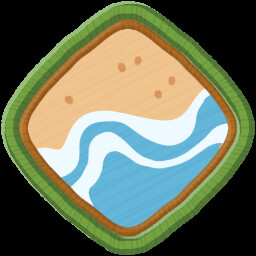 | INSÍGNIA DO NÁUFRAGO | Escale a COSTA. |
| 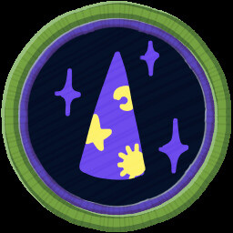 | INSÍGNIA ESOTÉRICA | Obtenha um item místico. |
| 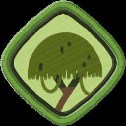 | INSÍGNIA DO DESBRAVADOR | Escale o TRÓPICO. |
| INSÍGNIA DO CAMPISTA | Receba 5 Reforços de Moral de fogueiras. |
| 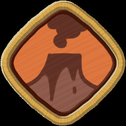 | INSÍGNIA DE VULCANOLOGIA | Escale a CALDEIRA. |
| 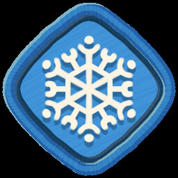 | INSÍGNIA DO ALPINISTA | Escale os ALPES. |
| 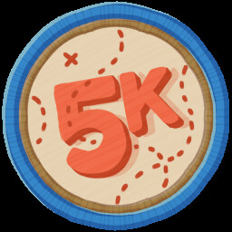 | INSÍGNIA DE ALTITUDE ELEVADA | Escale um total de 5.000m. |
| INSÍGNIA DE PRIMEIROS SOCORROS | Cure 100 pontos de lesão dos seus amigos em uma só expedição. |
| INSÍGNIA DO ARBORISTA | Alcance o topo de uma árvore bem alta. |
| 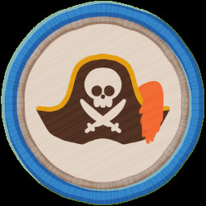 | INSÍGNIA DO LARÁPIO | Abra 15 bagagens em uma só expedição. |
| 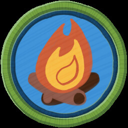 | INSÍGNIA DO COZINHEIRO | Prepare 20 refeições nas fogueiras. |
| 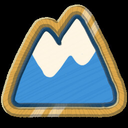 | INSÍGNIA DO PICO | Alcance o PICO. |
| 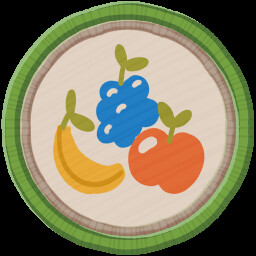 | INSÍGNIA DO COLETOR | Consuma 5 bagas diferentes em uma única expedição. |
| INSÍGNIA DE EMERGÊNCIA | Cure um amigo inconsciente com um item para salvá-lo da morte. |
| 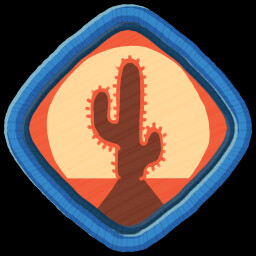 | INSÍGNIA DO NÔMADE | Escale a CHAPADA. |
| 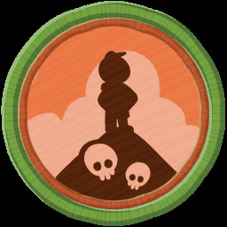 | INSÍGNIA DE PARTICIPAÇÃO | Deixe um amigo escapar da ilha sem você. |
| 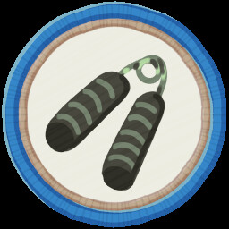 | INSÍGNIA DA RESISTÊNCIA | Escale 50m para cima sem tocar no chão. |
| INSÍGNIA DO SOBREVIVENTE | Escape da ilha sem nunca perder a consciência. |
| 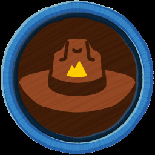 | INSÍGNIA DA MENTORIA | Tenha um tête-à-tête com o Chefe Escoteiro. |
 | INSÍGNIA DO BING BONG | Ajude o Bing Bong a escapar da ilha. |
| 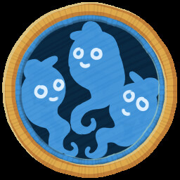 | INSÍGNIA DO SALVADOR | Reanime 3 escoteiros em uma só expedição. |
| INSÍGNIA DO ENCANTADOR DE ANIMAIS | Toque o cornetim para uma capivara. |
| INSÍGNIA TOXICOLÓGICA | Restaure um total de 200 de veneno usando itens. |
| 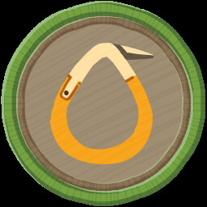 | INSÍGNIA DO MONTANHISTA | Fixe 10 pitons. |
| 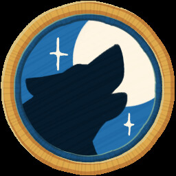 | INSÍGNIA DO ERMITÃO | Escape da ilha em uma expedição solo. |
| 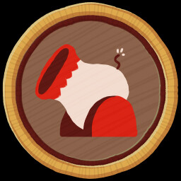 | INSÍGNIA DO INTRÉPIDO | Atravesse o cânion da CHAPADA num disparo de canhão. |
| INSÍGNIA DO APRESSADO | Escape da ilha em menos de uma hora. |
| INSÍGNIA REFRESCANTE | Escale a CHAPADA sem nunca ultrapassar 10% de Calor. |
| 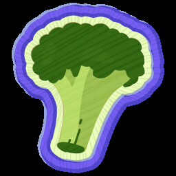 | INSÍGNIA DO NATURALISTA | Escape da ilha sem consumir nenhum alimento embalado. |
| INSÍGNIA DO BALÃO | Escape da ilha sem receber dano por queda. |
| 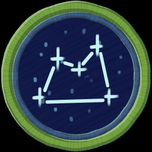 | INSÍGNIA DE ASTRONOMIA | Olhe um pouco perto demais para o sol escaldante. |
| INSÍGNIA DO RATO DE BIBLIOTECA | Leia todas as anotações de diário do Chefe Escoteiro Myres. |
| INSÍGNIA MICOLÓGICA | Consuma 4 tipos diferentes de cogumelos não tóxicos em uma só expedição. |
| INSÍGNIA AERONÁUTICA | Consiga voar. |
| 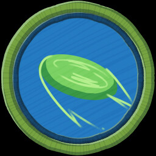 | INSÍGNIA SUPREMA | Pegue um disco a 100m de distância. |
| 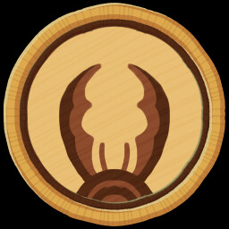 | INSÍGNIA DE MEGAENTOLOMOGIA | Sobreviva ao ataque da formiga-leão. |
| 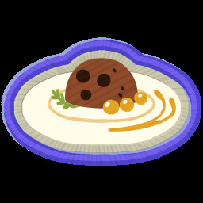 | INSÍGNIA DO GLUTÃO | Escape da ilha depois de cozinhar e consumir meio coco, um favo de mel, uma gelabaga amarela e um ovo. |
| 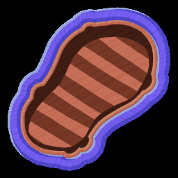 | INSÍGNIA SEM RASTROS | Escape da ilha sem largar nada na montanha. |
| 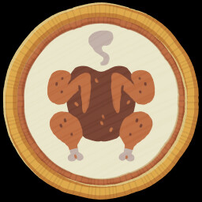 | INSÍGNIA DA ENGENHOSIDADE | Ceda à sua fome. |
| 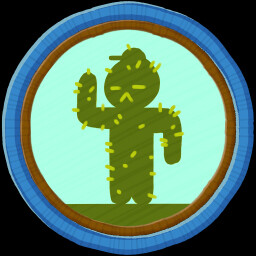 | INSÍGNIA DA AGULHA | Acabe com vários cactos presos em você. |
| 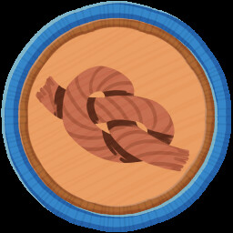 | INSÍGNIA DOS NÓS | Use 100m de corda em uma só expedição. |
| 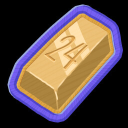 | INSÍGNIA DE 24 QUILATES | Ofereça um sacrifício digno ao FORNO. |
| 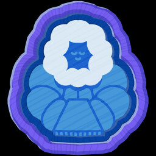 | INSÍGNIA DO AGASALHADO | Escale os ALPES sem nunca ultrapassar 20% de Frio. |